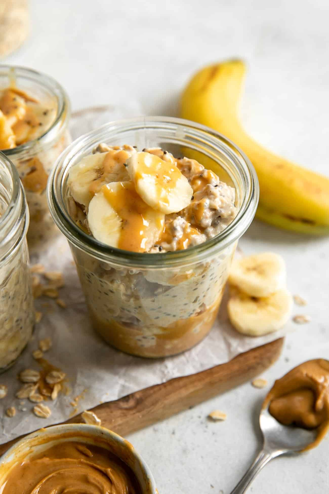

Overnight Oats

Description
A quick and easy breakfast that can be prepared the night before.
Ingredients
- Protein Powder (15g)
- Plain Fat Free Greek Yogurt (150g)
- Oats (60g)
- Almond Milk (125ml)
- Peanut Butter (15g)
- Banana
Steps
- Add oats, greek yogurt, and protein powder to mason jar (or any container).
- Add almond milk and mix.
- Store in the fridge overnight.
- Top with peanut butter and banana before consuming.